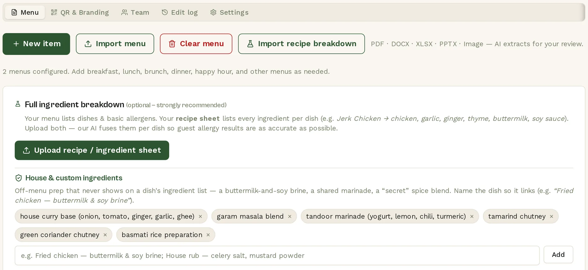

Loading real menu…Connecting to Canidine
Checking
The service-readiness platform for dietary safety
A calmer service starts before the guest sits down.
Can I Dine? turns your real menu into clear guest choices and clean kitchen handoffs—so one allergy at one table never puts the room in the weeds.
27public menu profiles
32normalized restrictions
10+guest languages
T
REAL PUBLIC MENUTerra Cucina
YOUR SAFETY PASSPORT
Good evening, Maya.
GlutenTree nuts＋ Add
iResults explain what was detected—not a medical guarantee.
✓
RESTAURANT EVIDENCEMenu reviewed
DATA SOURCE Live public API
01Fewer tableside surprises
02Faster confident ordering
03Clearer kitchen handoffs
04Evidence behind each result
Explore real public menusDifferent kitchens.
Different kitchens.
One clear experience.
This concept reads the same public restaurant directory guests use today. Pick a restaurant to load its real menu into the Safety Passport below.
Connecting to public Canidine data…
One source of truth, two calm experiences
The guest decision and the kitchen workflow stay connected.
Choose real dietary needs, change restaurants, and see public menu data interpreted through a more transparent safety interface.
From menu file to calmer service
Ready for the room in three clear steps.
Keep the live site’s simplest promise: restaurants start with the menu they already have. V3 makes the outcome and ongoing workflow more visible.
UPLOAD
Bring the menu you already use.
PDF, image, Word, Excel or PowerPoint. Canidine extracts dishes, ingredients and likely restrictions.
VERIFY
Confirm what only your kitchen knows.
Resolve preparation, supplier and cross-contact questions in a focused human queue.
PUBLISH
Give every guest one clear menu.
Share a branded QR experience with personalized choices, translations and exact handoffs.
Real Canidine restaurant workspace01 · Menu intelligence

Designed for the safety boundaryClear enough for a guest.
Clear enough for a guest.
Defensible enough for a kitchen.
Normalize
Turn guest language into a consistent restriction profile used across the whole experience.
One interpretation everywhereDetect
Apply deterministic ingredient, preparation and cross-contact rules before contextual AI.
Repeatable and testableExplain
Show the conflict, modification and evidence behind the result without inventing certainty.
Honest guest languageVerify
Give restaurant teams a focused place to confirm what only their kitchen can know.
Timestamped human evidenceReal current pricingStart with one room.
Start with one room.
Scale when ready.
Pricing below is loaded from Canidine’s current public pricing endpoint. Founding-member availability and totals can change with the live service.
Loading current plans…Make the menu ready
before the room fills.
Give guests a clearer way to choose and your team a calmer way to serve.